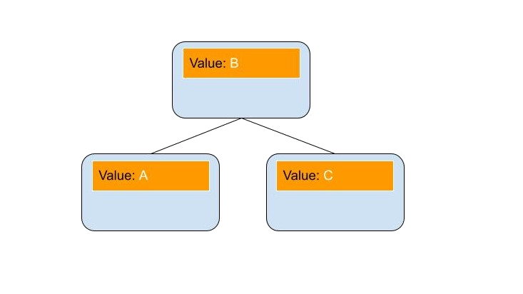
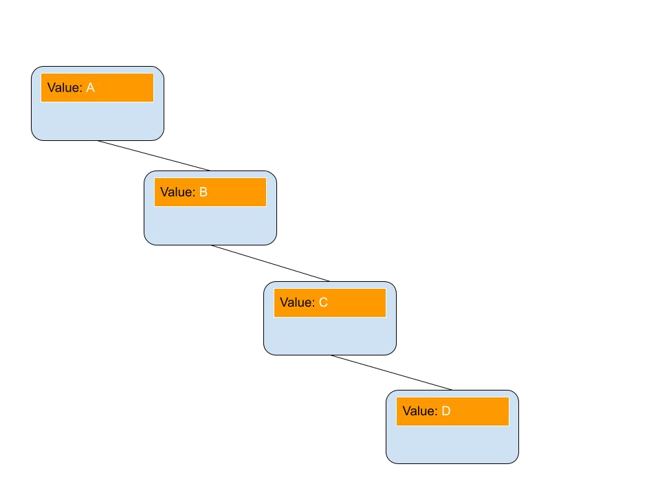
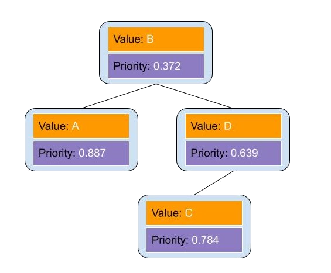
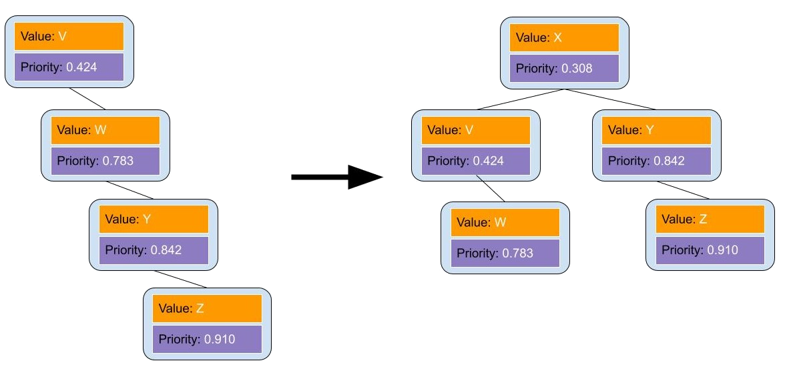

Treaps:
Let us begin with a normal Bianary Search Tree we learned in class, where each node contain a value, and the nodes are linked with lesser values being left children, and greater values being right children. This structure works great with bianary search, as when it is properly made it allows for data to be found in Log(n) steps.
These work great until you try to enter your data sequentially i.e. in acending or decending order. When this happens, the tree becomes very long, and you lose any advantages of a BST, as you will potentially have to traverse through every element.
One approach to solve this problem is to add a second value to each node, a priority. The structure will still follow the BST rules with regard to the value, but it will also follow heap rules with regard to the priority, so nodes will always have a lower priority than any of its children.
What we have created now is a combination of a tree and a heap, hence its name, a treap. These invariants are enforced anytime a new peice of data is added through a series of rotations, very similar to how an AVL tree works, as we learned here. But how do we decide the priorities in order to make the tree more balanced? We do that randomly! The reason why we do this has to do with probability. A normal BST reaches its worse-case senario when data is inserted in order, but with these new invariants, both the data being entered, and the randomly assigned priority would have to be in sequential order, something that has a very low probability. What this means is that while there is still a chance we see the worse-case senario, the odds become very low. But even in that unlikely event, the structure has a chance to balance itself out whenever a new insertion is made!
But perhaps the best part about this approach is that because it still builds off all the invariants of a default BST tree, adding these new rules will only ever make the tree more bushy, it will never make it worse! As you hopefully can see, Treaps are able to build off the materials we learned in class, and use randomness in order to improve upon them.